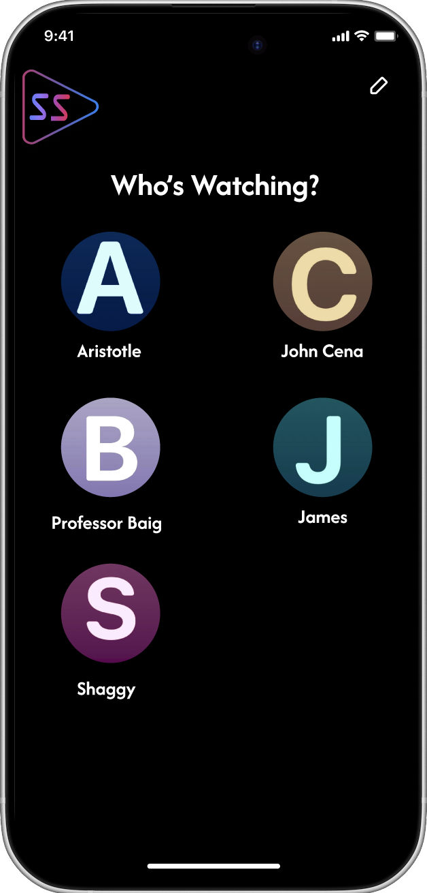
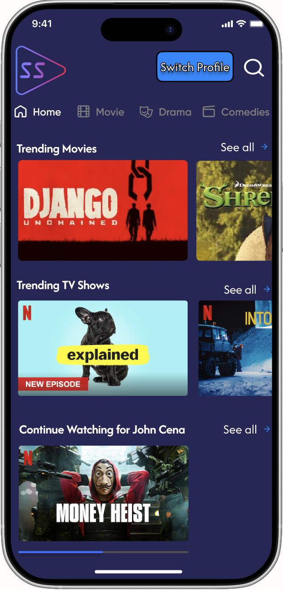
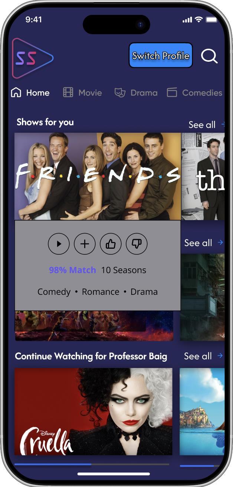
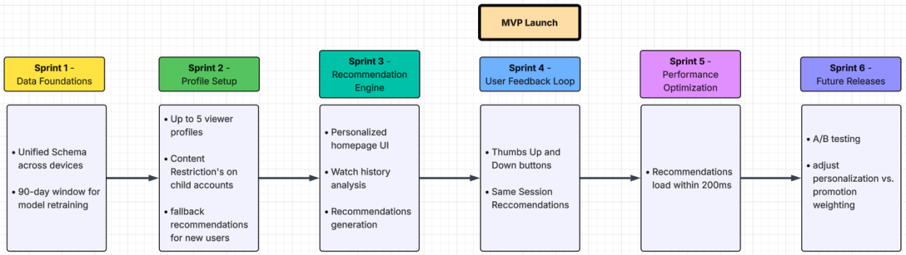

StreamSync is a mid-sized independent streaming platform operating across North America with a catalog of roughly 14,000 titles spanning films, documentaries, short-form series, and licensed third-party content. The platform had seen a 34% drop in average session time over the past two quarters. Internal data suggested users were churning primarily during the content discovery phase, spending several minutes browsing before abandoning the session entirely without watching anything.
The existing recommendation logic was rule-based, relying on genre tags and broad popularity rankings, with no mechanism for adapting to individual behavioral signals such as partial watches, rewatch patterns, time-of-day preferences, or mood-adjacent browsing. Leadership approved a phased initiative to replace this static engine with a personalized, behavior-driven system.
The challenge was significant: data infrastructure was fragmented across three internal teams with no unified schema, there was no consensus on handling cold-start users (fewer than five interactions), and the system had to balance personalization fidelity, business content promotion goals, infrastructure budget constraints, and a user experience that felt intuitive rather than manipulative.
Danyal served as Scrum Master and Product Manager, leading a cross-functional team of six.
The recommendation engine follows three core steps at launch:
Family profiles (up to 5 per account) and the Like/Dislike feedback button are both accessible at launch.
The following 13 user stories make up the MVP product backlog. Stories with detailed acceptance criteria are expanded below.
1. As a registered viewer, I want to receive a personalized homepage row of recommended titles every time I open the app, so that I can start watching something relevant without spending time searching.
2. As a registered viewer, I want the system to update my recommendations within the same session after I finish or abandon a title, so that subsequent suggestions reflect what I just watched.
4. As a tester, I want to verify that a user with fewer than five watch events receives fallback recommendations based on regional popularity and onboarding genre selections rather than a blank or broken row, so that cold-start users are not shown an empty or degraded experience.
Acceptance Criteria: The system does not show incomplete sections. New users see popular or trending content. The homepage shows at least 10 titles with no blanks or incomplete sections. If the user selects a genre preference during account creation, those genres must be reflected in the initial recommendations. The initial recommendations only need to be consistent until the user completes their 5th watch event.
5. As a household account holder, I want to create up to five viewer profiles under a single subscription, so that my recommendations are not contaminated by the watch history of other people in my home.
Acceptance Criteria: Users can create up to five profiles. Each profile has a separate watch history. Recommendations change when switching profiles. Switching between profiles loads only the selected profile's recommendations with no bleed or influence from other profiles in the same household account.
6. As a registered viewer, I want to mark a recommendation as "not interested," so that titles I dismiss stop appearing across future recommendation surfaces.
Acceptance Criteria: Users can interact with the dislike button to remove content from recommendations, and this change is applied across all devices. The title immediately disappears from the recommendations section and no longer appears on any other devices linked to the same account and profile. It must never reappear at any point in the future regardless of how much time has passed.
7. As a data engineer, I want all behavioral events, including play, pause, skip, rewind, and abandonment, to be captured in a unified event schema regardless of which device the user is on, so that the recommendation model trains on consistent and complete signal data.
8. As a tester, I want to verify that dismissing a title on one device is reflected in recommendations on all other devices linked to the same profile within 60 seconds, so that user feedback is propagated in near real-time across the platform.
10. As a registered viewer, I want the system to recognize that my viewing habits on weekend evenings differ from my weekday patterns and surface content accordingly, so that recommendations feel contextually appropriate rather than generic.
11. As a tester, I want to verify that a viewer profile with an exclusively children's content watch history never receives recommendations for titles flagged as mature, so that content filtering by rating is enforced at the recommendation layer and not only at playback.
Acceptance Criteria: The algorithm showcases only children's content. Absolutely zero titles rated above PG appear anywhere in the recommendations section, even if the title is the most trending content at that time. The filter must work not just at playback but before recommendations have been generated.
12. As a machine learning engineer, I want to retrain the recommendation model on a rolling 90-day behavioral window rather than full history, so that the system adapts to shifting user preferences without being anchored to stale data.
15. As a tester, I want to verify that when a user's account is authenticated via the third-party SSO provider, their profile preferences and watch history load correctly and recommendations are not reset or reassigned to a different profile, so that the SSO integration does not corrupt personalization state.
18. As a machine learning engineer, I want the recommendation inference pipeline to return results within 200 milliseconds at the 95th percentile under peak concurrent load, so that the homepage does not visibly delay on app open.
19. As a registered viewer, I want the system to treat a title I watched more than halfway through differently from one I abandoned in the first five minutes, so that my engagement depth is factored into what gets recommended next.
Designed in Figma by Danyal. The screens below show the profile selection flow, the personalized homepage with trending and continue-watching rows, and the like/dislike interaction overlay with a match percentage.

Profile Selection

Personalized Homepage

Like / Dislike Feedback
The project followed an Agile framework with 2-week sprint intervals across 6 sprints over 3 months. MVP launch occurs after Sprint 4.

Risks:
Dependencies:
Assumptions:
Limitations:
Key testing focused on child account content filtering and cold-start user onboarding. A bug was identified where the PG content filter only activated at playback, not before recommendations were generated, and was fixed so filtering happens before the homepage renders. A separate issue where onboarding genre preferences were not being passed into the recommendation engine for new users was also resolved and validated.
In a final validation with 2,000 users, the system showed a significant improvement in average session time compared to StreamSync's baseline, and a measurable drop in users leaving before selecting content; this was the primary churn driver identified at the start of the project.
The project was presented in front of the class, with Danyal leading the initiative. He walked the audience through the full breakdown of the project, covering the business problem, the system requirements, the sprint plan, the prototype, and the testing results, then fielded all questions the class had at the end of the presentation.